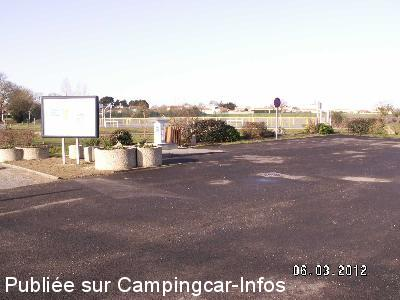
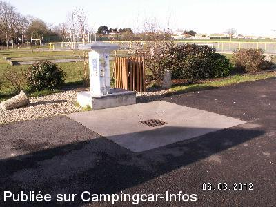
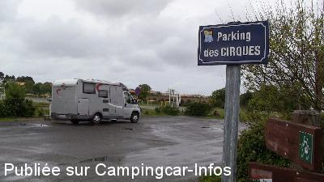
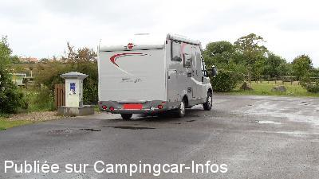
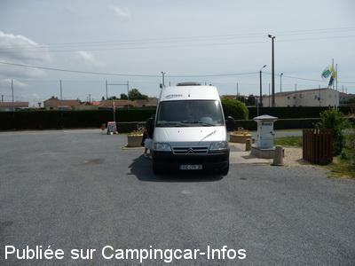
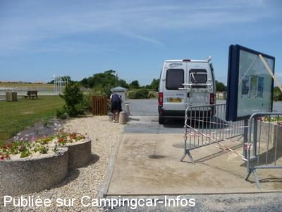

AS = Aire de services uniquement de :
LA PLAINE SUR MER
(N° 425)
Accès/adresse :
Angle Boulevard des Nations Unies / Chemin de la Gare
44770 LA PLAINE SUR MER
44770 LA PLAINE SUR MER
Latitude : (Nord) 47.14015° Décimaux ou 47° 8′ 24′′
Longitude : (Ouest) -2.19032° Décimaux ou -2° 11′ 25′′
Tarif : Gratuit
Services :


Intermarché à 150 mètres
Autres informations :
http://www.laplainesurmer.fr

Le 22/08/2014 par Gilles

Le 22/08/2014 par Gilles

Le 11/06/2014 par migeboilou

Le 11/06/2014 par migeboilou

Le 30/06/2009 par Xtian74

Le 30/06/2009 par Xtian74
de
vadrouilleur 18
le 22/09/2013 :
De passage le 19 20 21 sept pour les grandes marées Merci à la commune pour services gratuit.
De passage le 19 20 21 sept pour les grandes marées Merci à la commune pour services gratuit.
de
maryline Lucas
le 13/11/2012 :
Merci à la commune pour cette aire gratuite. De passage nous y avons fait le plein. Et pour y passer la nuit j'ai constaté que c'était le parking à côté de la salle des sports.
Merci à la commune pour cette aire gratuite. De passage nous y avons fait le plein. Et pour y passer la nuit j'ai constaté que c'était le parking à côté de la salle des sports.
de
loulou38
le 01/09/2012 :
Il n'est plus possible de se garer aux alentours, la police municipale vous fait partir à 1h du matin.
Problème quand le camping est complet....
Il n'est plus possible de se garer aux alentours, la police municipale vous fait partir à 1h du matin.
Problème quand le camping est complet....
de
papy 03
le 09/05/2011 :
Jolie petite ville, belle aire services gratuits, stationnement possible à côté, les enfants peuvent jouer et la boulangerie est à recommander. Ne pas oublier à quelques km St-Michel-Chef-Chef pour les gourmands : magasin d'usine des fameux gâteaux Saint-Michel.
Jolie petite ville, belle aire services gratuits, stationnement possible à côté, les enfants peuvent jouer et la boulangerie est à recommander. Ne pas oublier à quelques km St-Michel-Chef-Chef pour les gourmands : magasin d'usine des fameux gâteaux Saint-Michel.
de
Xtian74
le 01/06/2009 :
Petit arrêt pour y faire le plein d'eau. Les services sont gratuits. Quant aux commentaires relatifs au monnayeur de mes prédécesseurs sur cette aire : pas compris, il n'y en a pas ou il n'y en a plus
Petit arrêt pour y faire le plein d'eau. Les services sont gratuits. Quant aux commentaires relatifs au monnayeur de mes prédécesseurs sur cette aire : pas compris, il n'y en a pas ou il n'y en a plus
de
jacques
le 17/04/2009 :
De passage à Pâques. Très belle aire gratuite avec une aire de sports juste devant, idéale pour les enfants plus un terrain de pétanque !!! Supermarché à proximité. Dommage pour le monneyeur. Très calme la nuit. Merci la municipalité
De passage à Pâques. Très belle aire gratuite avec une aire de sports juste devant, idéale pour les enfants plus un terrain de pétanque !!! Supermarché à proximité. Dommage pour le monneyeur. Très calme la nuit. Merci la municipalité
de
Christian BRIEUC
le 08/05/2008 :
Pas d'eau, système à jetons obstrué par une plaque cadenassée (voir photo). Parking situé à 50 mètres, assez calme.
Pas d'eau, système à jetons obstrué par une plaque cadenassée (voir photo). Parking situé à 50 mètres, assez calme.